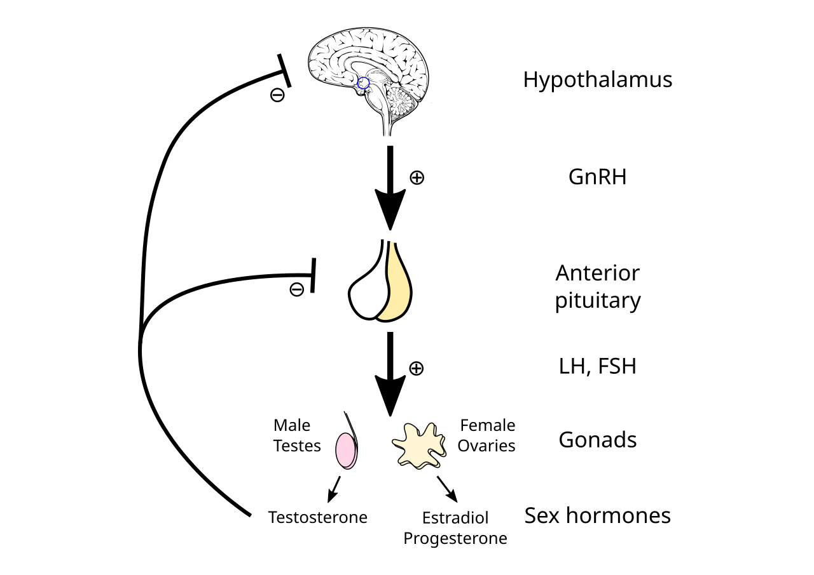

Bi Kịch Bị Bình Thường Hóa: "Mất Kinh Là Chuyện Thường Ở Dân Thể Thao"?
Trong các phòng tập gym, đường chạy marathon hay các lớp CrossFit, một quan niệm lệch lạc chết người vẫn đang lưu truyền: "Chừng nào chưa mất kinh thì tập chưa đủ nặng", hoặc "Mất kinh đỡ phiền toái, chứng tỏ cơ thể ít mỡ chuẩn vận động viên".
Y học thể thao quốc tế (Ủy ban Olympic Quốc tế - IOC Consensus Statement, Mountjoy et al., 2018 và 2023) khẳng định dứt khoát: Mất kinh nguyệt do tập luyện là một bệnh lý suy kiệt sinh học nghiêm trọng gọi là Vô Kinh Do Vùng Hạ Đồi (Functional Hypothalamic Amenorrhea - FHA), một mắt xích cốt lõi trong Hội chứng RED-S (Relative Energy Deficiency in Sport).
Khi bạn tập luyện quá mức nhưng nạp không đủ năng lượng, cơ thể bạn sẽ diễn dịch tình trạng này như một đợt "nạn đói khắc nghiệt". Để bảo toàn sự sống cho tim, não và phổi, não bộ sẽ lập tức cắt nguồn năng lượng nuôi dưỡng hai hệ thống bị xem là "xa xỉ phẩm" trong sinh tồn: Hệ Sinh Sản (Tắt kinh nguyệt) và Hệ Tái Tạo Xương (Ngừng đắp canxi vào xương).

Công Thức Đo Lường: "Năng Lượng Sẵn Có" (Energy Availability - EA)
Nhiều phụ nữ lầm tưởng chỉ cần đếm calo nạp vào bằng calo tiêu thụ là đủ. Tuy nhiên, trong sinh lý học thể thao, chỉ số quyết định sự sống còn của hormone là Năng Lượng Sẵn Có (Energy Availability - EA):
📐 Công Thức Đo Lường:
EA = [Tổng Năng Lượng Nạp Vào (kcal) − Năng Lượng Tiêu Hao Khi Tập Luyện (kcal)] / Khối Lượng Cơ Thể Không Mỡ (FFM tính bằng kg) (Đơn vị tính: kcal / kg FFM / ngày)
Các Ngưỡng Lâm Sàng Chuẩn Y Khoa:
- EA Tối Ưu (> 45 kcal/kg FFM/ngày): Mọi chức năng buồng trứng, tuyến giáp, tim mạch và miễn dịch hoạt động hoàn hảo; chu kỳ kinh nguyệt đều đặn.
- EA Dưới Chuẩn (30 - 45 kcal/kg FFM/ngày): Pha hoàng thể bị rút ngắn (< 10 ngày), nồng độ progesterone suy giảm nhẹ, rụng trứng không đều.
- Vùng Nguy Hiểm Đỏ (< 30 kcal/kg FFM/ngày): Ngưỡng sụp đổ sinh học. Vùng hạ đồi kích hoạt chế độ ngủ đông; trục nội tiết buồng trứng ngừng hoạt động hoàn toàn.
Ví dụ thực tế: Một nữ vận động viên nặng 55 kg với 20% mỡ cơ thể → Khối lượng nạc FFM = 44 kg. Cô ấy ăn 1800 kcal và tập luyện tiêu hao 800 kcal.
EA = (1.800 − 800) / 44 = 1.000 / 44 = 22.7 kcal/kg FFM/ngày Con số 22.7 nằm sâu trong Vùng Nguy Hiểm, chắc chắn sẽ dẫn đến mất kinh và thoái hóa xương dù bề ngoài cô ấy trông rất thon gọn!
Bảng Hệ Lụy Đa Cơ Quan Của Hội Chứng RED-S
| Cơ Quan Bị Ảnh Hưởng | Cơ Chế Bệnh Sinh Do Thiếu Năng Lượng | Biểu Hiện Lâm Sàng Thực Tế | Tín Hiệu Cảnh Báo Trên Thiết Bị Đeo |
|---|---|---|---|
| Buồng Trứng & Sinh Sản | Nơ-ron Kisspeptin ngừng phát xung GnRH → Mất đỉnh sóng LH → Không rụng trứng. | Trễ kinh > 35 ngày hoặc mất kinh trên 3–6 tháng; khô hạn âm đạo, mất hoàn toàn ham muốn. | Biểu đồ chu kỳ kinh nguyệt không còn pha hai nhiệt độ (Nhiệt độ da BBT nằm phẳng lì cả tháng). |
| Khung Xương (Bone Health) | Hụt estrogen kết hợp cortisol tăng cao làm tăng vọt hoạt tính hủy cốt bào; xương mất canxi nhanh chóng. | Chấn thương rạn nứt xương do mệt mỏi (Stress Fractures ở cẳng chân, bàn chân); đau mỏi khớp kéo dài. | Điểm Recovery sụt giảm kéo dài sau các buổi tập chạy hoặc nhảy tác động mạnh. |
| Tuyến Giáp & Chuyển Hóa | Chuyển đổi hormone T₄ thành T₃ hoạt tính bị chặn đứng (Hội chứng T₃ thấp - Low T₃ Syndrome). | Tốc độ chuyển hóa cơ bản giảm 20%–30%; luôn cảm thấy lạnh cóng tay chân dù trời nóng; rụng tóc, táo bón. | Thân nhiệt ban đêm luôn thấp hơn mức bình thường từ 0.4°C đến 0.8°C. |
| Hệ Thần Kinh Thực Vật | Tuyến thượng thận tăng tiết Cortisol mãn tính; cạn kiệt glycogen dự trữ tại gan và cơ bắp. | Mất ngủ chập chờn, tỉnh giấc giữa đêm, lo âu quá mức, hiệu suất thể thao sa sút không phanh. | HRV ban đêm sụt giảm sâu liên tục; nhịp tim nghỉ ngơi RHR có xu hướng tăng cao bất thường. |
4 Dấu Hiệu Nhận Diện "Báo Động Đỏ" Trước Khi Mất Kinh Hoàn Toàn
- Chu Kỳ Kinh Nguyệt Bắt Đầu Dãn Dài (Oligomenorrhea): Chu kỳ trước đây 28 ngày bắt đầu kéo dài thành 35, 42 rồi 50 ngày mới có một lần.
- Xuất Hiện Chấn Thương Nứt Xương (Stress Fracture): Bị đau nhức cẳng chân khi chạy bộ và chụp MRI phát hiện rạn nứt xương chày hoặc xương bàn chân mà không hề bị va đập trực tiếp.
- Cảm Giác Luôn Bị Lạnh Cóng: Tay chân lạnh buốt ngay cả khi đang ở trong phòng ấm là dấu hiệu rõ ràng của việc tuyến giáp hạ chuyển hóa để tiết kiệm nhiệt năng.
- Hiệu Suất Thể Thao Đột Ngột Đi Xuống Dù Vẫn Tập Đều: Tạ nâng nhẹ hơn, chạy chậm hơn và thời gian phục hồi cơ bắp kéo dài gấp đôi bình thường.
Giao Thức 4 Bước Phục Hồi Năng Lượng & Đánh Thức Buồng Trứng
- Nâng Năng Lượng Sẵn Có Ngay Lập Tức: Tăng khẩu phần ăn thêm 300 đến 500 kcal mỗi ngày, đặc biệt tập trung vào các chất béo lành mạnh (quả bơ, các loại hạt hạnh nhân/óc chó, dầu ô liu) để cung cấp cholesterol làm nguyên liệu tổng hợp hormone sinh dục.
- Cứu Vớt Tuyến Giáp Bằng Tinh Bột (Carbohydrate Re-feeding): Não bộ và vùng hạ đồi cần glucose để cảm nhận sự an toàn năng lượng. Tuyệt đối chấm dứt chế độ ăn kiêng Low-carb hay Ketogenic; hãy nạp tinh bột phức hợp (khoai lang, yến mạch, cơm gạo lứt) ngay trước và sau buổi tập.
- Cắt Giảm Tải Trọng Thể Lực (Deload Strain): Giảm thời lượng tập luyện xuống 30%–50%; tạm ngưng hoàn toàn các bài tập cardio biến tốc cường độ cao (HIIT); thay thế bằng yoga phục hồi hoặc đi bộ nhẹ nhàng.
- Theo Dõi Tín Hiệu Thân Nhiệt Tái Sinh: Sử dụng thiết bị đeo theo dõi nhiệt độ da ban đêm. Khi năng lượng phục hồi, bạn sẽ thấy nhiệt độ cơ bản tăng trở lại, biểu đồ xuất hiện bước nhảy nhiệt độ sau rụng trứng (+0.3°C), báo hiệu trục HPO đã bắt đầu thức tỉnh và chu kỳ kinh nguyệt sắp quay trở lại!
Nguồn Y Khoa Lâm Sàng & Tài Liệu Tham Khảo
- De Souza, M. J., et al. (2014). 2014 Female Athlete Triad Coalition Consensus Statement on treatment and return to play of the female athlete triad. British Journal of Sports Medicine, 48(4), 289-289. Tạp chí BJSM: Đồng Thuận Quốc Tế Về Hội Chứng Tam Giác Vận Động Viên Nữ (PMID: 24463911) ↗
- Mountjoy, M., et al. (2018). International Olympic Committee (IOC) consensus statement on relative energy deficiency in sport (RED-S): 2018 update. British Journal of Sports Medicine, 52(11), 687-697. Tạp chí BJSM: Tuyên Bố Đồng Thuận Ủy Ban Olympic Quốc Tế Về Thiếu Năng Lượng RED-S (PMID: 29773536) ↗
- Gordon, C. M., et al. (2017). Functional hypothalamic amenorrhea: an Endocrine Society clinical practice guideline. The Journal of Clinical Endocrinology & Metabolism, 102(5), 1413-1439. Hướng Dẫn Hiệp Hội Nội Tiết Endocrine Society: Vô Kinh Vùng Dưới Đồi (PMID: 28368449) ↗
- WHOOP Strain & Recovery Algorithms (2025). Monitoring Low Energy Availability & Autonomic Suppression. WHOOP The Locker: What is RED-S & How Wearables Detect Low Energy Availability ↗